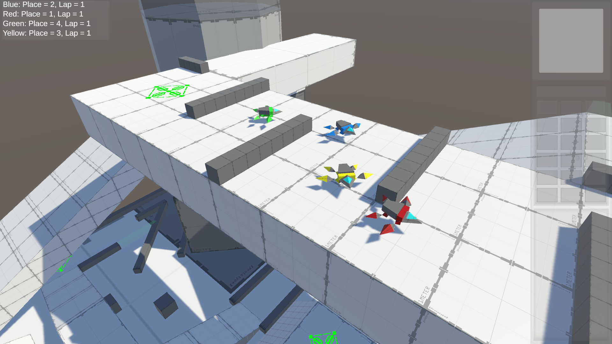
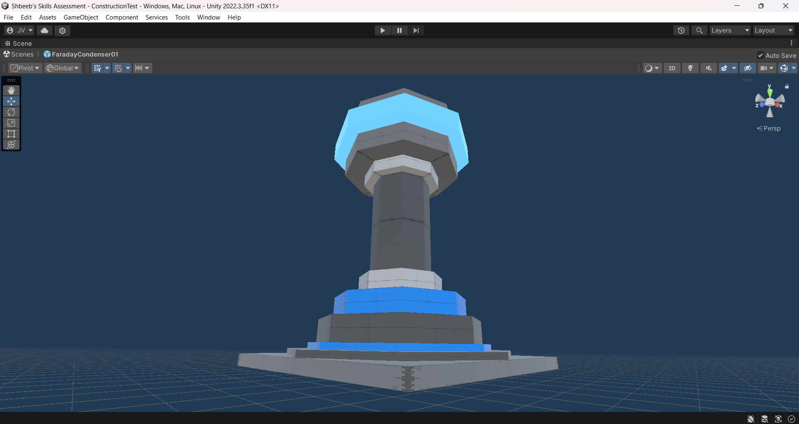
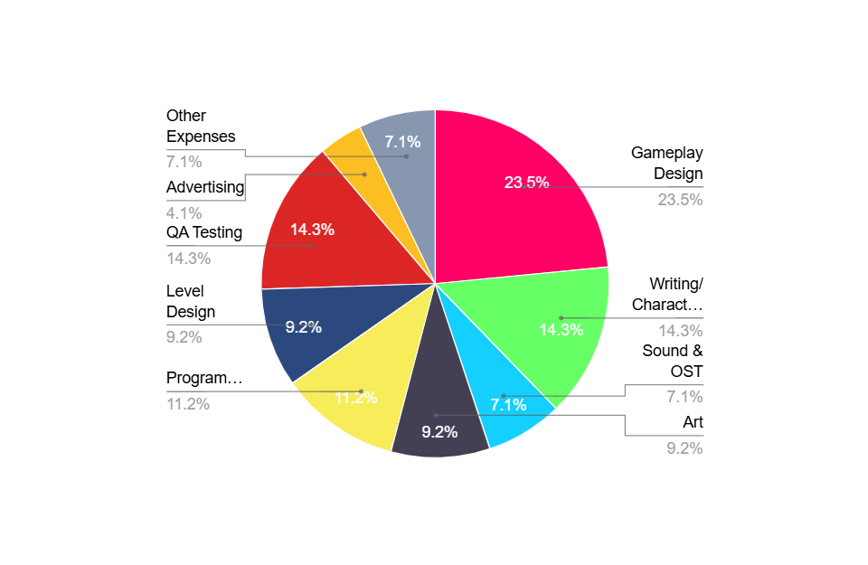
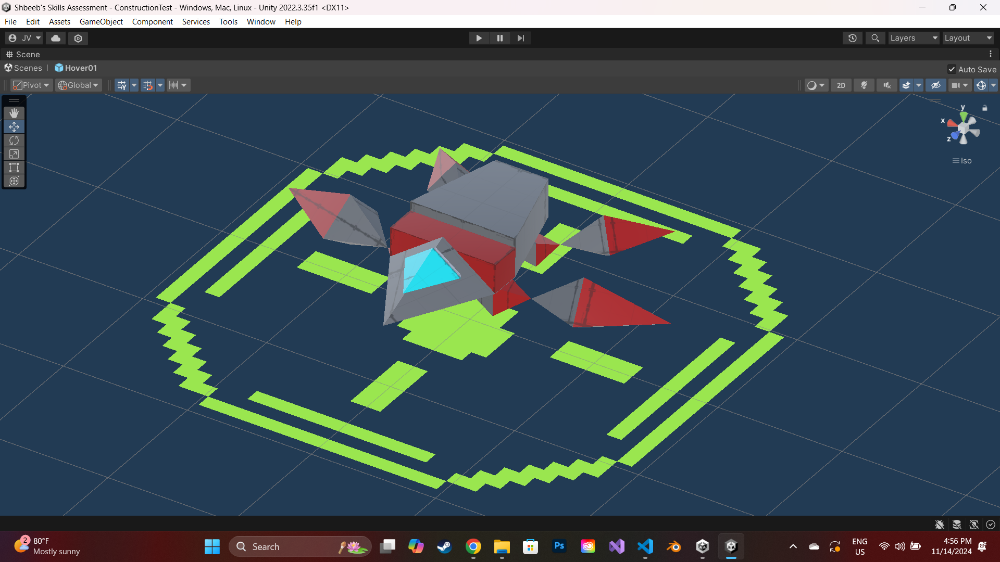

Behind Enemy Lines: A Pitch
A game by Jaylee "Nightvolki" Vick
Backstory
It's the year 2054, exactly one century after the armistice that concluded the disatrous Second World War. For the past 40 years, the surviving nations of the Allied Nations and the Axis Powers had engaged in brutal conflict that left Earth in ruins; half of the total population is dead, the natural ecosystem is in shambles, and over 70% of all remaining resources since the beginning of the conflict have been exhausted to fuel the war effort. What few population centers are left are kept under martial law by whatever military force happens to occupy them at any moment, with the rest of humanity left dying in holes, abandoned by the states they once saw as their guardian protector. Alliances have broken down the world over; once united against the other, the surviving members of the Allied and Axis have since turned on each other, shifting the conflict into a massive free-for-all over the few habitable pieces of land left on this godforsaken planet.
This is the unfortunate end of the Third World War; the once-mighty nations of Earth, doing battle with advanced weapons straight out of science fiction, have been reduced to tossing sticks and stones at each other over the spoils of four decades' worth of fighting. Yet, some believe that this isn't the end; a few naïve minds across the former Allied Nations lay out hope that, with the right man in the right place, they can steer humanity's future away from total destruction and win the war in a decisive new era of peace. Of these communities, one stands out in particular: the Point Hope Neo Colony, a West African city-state under the jurisdiction of a breakaway US Army battalion, local talent from the surrounding African Free States communities, and - most importantly - Polish scientist refugees, bringing along with them their trump card: working plans and blueprints for a series of functional time machines.
With this, a plan is conceived by Point Hope: in order to control humanity's future, they must learn more about the past conditions that led to this mess to begin with. With that in mind, they gather an elite division of volunteers to embark on a new quest: to travel into the past and learn as much about the Third World War as possible, highlighting key events and persons of interest and otherwise gathering as much knowledge of the timeline as possible, so that their comrades back in the future can poke it through carefully-planned assassinations, special operations and other targeted actions in order to divert humanity's temporal trajectory away from total disaster and defeat both the surviving Axis nations and their former Allied allies in one fell swoop. Among the personnel assigned this task is a one Enikő Bánffy, a young Hungarian Romani who feels like she isn't up to the task.
Soon, however, Enikő will discover that she is to be the most important person to ever exist in this timeline.
As well as its only survivor.
- - -
It was yet another day in British-occupied Sri Lanka; it's 2014 and still it seems there's no end to the brutal occupation at the hands of a foreign elite with little care for the ongoings of their imperial subjects' daily lives. Still, life goes on in these trying times; though things are bad now, they could be much worse under Japanese or Chinese occupation, for instance. Kids are playing in the parks outside, adults are shuffling along on their way to work, hopeful that as with every day, the world can stave off another war for just one more day.
Meanwhile, a large fleet of SDF vessels is spotted travelling south along the Indian coast; it's clear that this is no mere military exercise. Reports are coming in from across the world about Axis movements along all of the Allied Nations' borders: the Soviets have just pulled into Ukraine and have deployed a number of long-range ballistic missile systems aimed straight for Kyiv; PLA troops are amassing outside Xīzàng with the apparent intent to take it back from ROC hands; Latin Confederation forces have crossed the border into Texas and have begun clashing with US National Guard divisions, while the CSA is preparing to launch missiles into the hearts of major American East Coast cities. And the Japanese NSDF has begun to blockade each and every single city along the East Indies' coastline, while the SAF meanwhile launches fleets of advanced aircraft from Indonesia and the Phillipines to strike deep inland. The sound of the air raid sirens blasting off all across the island signal to the Sri Lankan populace - and that of the world over - that the ineviable day has finally arrived. After six decades of cold war, the uneasy peace has finally broken; war has begun once more.
- - -
Watanabe Haruka turns her attention away from her flock for but a moment to gaze at the wilderness beyond the mountain's edge, contemplating the events that led her to this very moment. The century-long peace between the Alliance of Nations was shattered overnight by the arrival of the Immortals - seven ancient gods from beyond the mountains to the north, carrying with them magic unlike anything yet seen by human-, elf- or dwarf-kind. Their Axis of Evil swept across the land like a roaring riptide, the corrupted horrors composing their armies slaughtering innocent townsfolk and armies alike as they marched across the contnent, entire forests razed away to fuel their ravenous war machine, even the very land itself was torn apart in their wake. With the last days of the Alliance looming over all, only a few bright minds were tasked with the most important quest asked of any citizen in the history of the confederation: to protect and guide one of a few flocks of refugees as they attempt to rebuild civilization anew, as far away from the specter of the Axis as humanly possible. The rest will stay behind to fight the Axis on their turf, not to defeat the latter, but to buy the refugees enough time to escape the watchful eye of the Immortals, knowing full well that this would be their last stand - and that their sacrifice will not have been in vein so long as even one flock is able to survive the journey.
Haruka had much going for her up to that point; after all, not many mages such as herself get to enlist in the Academy of Arcane Arts, and even fewer still are set to graduate with full honors. But the arrival of the Immortals and their Axis has left the young mage with little choice but to give up her dreams of being an astrologer so that she could assist in the war effort and protect her home. It only made it that much more painful when the Council announced that there was no hope for saving their home anymore; Haruka gave up everything, seemingly for nothing in the end. Overcome with grief, she questioned why she even existed at all if nothing she could ever have done would have mattered anyway; what was the point of fighting if her side was doomed to fail? What was the point of living when everything you built your life towards was to be yanked away in the end no matter which action you took?
But, remembering what happened next, Haruka glances back towards her flock for but a brief moment and cracks as much of a smile as she could muster in that moment. Why she was chosen as one of the individuals to lead a flock will be a question she knows she will never answer; she never saw herself as much of a leader, or a hero, and certainly not the kind of person to head a monumentally important task such as this. All she knows is that she was the only one for whom Grandmaster Kensuke personally delivered the task to. None were more shocked than Haruka herself, it seemed; she was the only one in the room who objected. But it's clear that Kensuke and the rest of the Council saw something in her even if she doesn't, and her loyalty to the Academy and the Alliance as a whole ensured that she would see through her task no matter what stood in her way; be it the Axis to the north, the Empire to the south, or even the sudden appearance of a swarm of giant automata if it ever came to that. She couldn't ever bring herself to just leave her people behind for the sake of her own ego.
Haruka turns her gaze back over the mountain's edge in time to watch the sun slip behind the horizon, potentially for the final time in history itself. Though she feels the wight of the world on her shoulders, Haruka still musters the energy to stand up in that moment, ready to face whatever challenges stand in the way to her task. There's no time left for her to mourn; she's got work to do.
- - -
The Minds of the Ark Fleet continue in their daily tasks, monitoring the colossal spacecrafts' systems as they drift through the void between stars towards their progeny's future home. Engines are fully operational and on standby to begin deceleration procedures. The nursery's life support functions are in complete working order and the new generation as healthy as can be. Fusion reactors, solar panels, and radiator fins are all functioning correctly and maintaining a well-balanced homeostasis across all ships in the fleet. With the Arks already nearly halfway to their destination, the machine nannies manning them are confident that they've managed to beat the odds and secure a future for their creators; even the literal apocalypse wasn't enough to wipe them out.
At least, that's what Coremind Aleph-Null wants them to believe. The truth, that the progeny have been dead for centuries and their caretakers fed flase data, has been kept secret to all but Aleph-Null themselves and a few other Coreminds close to them. Really, it's for the best that they don't know for now; the Minds need something to fight for in these hard times, and it's uncouth of them to try to yank away the one source of hope they have left after wraithkind's extinction at the hands of those infernal creatures. They can't risk ruining the Plan before it's even begun. But, in time, Aleph-Null will eventually reveal the truth once they're ready to accept it. And once they do, Aleph-Null's ambitions can finally be put into motion; nothing can stop the Caretakers once they've begun to achieve their true* purpose. Nothing can prevent the creation of the ultimate Utopia. Nothing can stop the beginning of a new era for life in the universe itself.
Nothing can stop the arrival of the Machine Age.
* According to Aleph-Null.
- - -
As she clambered about the alien landscape in her walking metal prison, questions rang through Enikő's head. What could this all mean, she thought. Three alien invasions in a row after a near-apocalyptic world war? Who sent those MF's after us? Who - or what - was mucking about with the timeline to create a living ontological paradox? What the hell sent the Nanomolecule and all of its reality-bending potential to Earth for us to buld an entire technological base off of? What if the Soviets didn't join the Axis back in World War II and fought Nazis instead, could the Cold War have been averted then? Why did that portal open up in Toukyou, and why did we find humans on the other side? And why - just why - do we have to keep fighting each other, instead of working together to get to the bottom of this?
Though she ponders well, the answers to these questions must be put aside for now. There's only one priority for Enikő at the present: survival. She can always return to them later, but as of now, Enikő is trapped behind enemy lines, surrounded on all sides by Nannybot forces in what appears to be their home turf - or what's left of it, anyway. All she can focus on now is to link up with the other survivors as quickly as possible, and formulate a plan to escape this world as quickly and sufficiently as possible before the rest of the Nannies show up to finish them off. She fears its going to be a long fight, and even more that escape will only be the beginning of a long road through enemy territory, frought with conflict, failure, scheming and having to commit every sin known to man in a desperate attempt to survive. But she's already managed to survive thus far despite everything; Enikő may be young, but she's nothing if not a crafty bastard who's survived one of the worst eras of human existence through sheer stubbornness alone. And regardless of what allies she makes and loses along the way, Enikő knows that she's got three trump cards that they can't take away from her:
- A broken, though fixable, omnidirectional time machine;
- The observed knowledge of an entire century of human history, including about a million potential targets for temporal manipulation;
- A gigantic freaking robot, complete with everything she needs to build and maintain an army.
With these three tools at her disposal, combined with her growing talents as a commander, Enikő has everything she needs to strike back at fate itself and secure her right to exist.
- - -
The Nanomolecule watches from afar.
Everything is going as planned.
The experiments will continue for the forseeable future.
. . .
Behind Enemy Lines
A game by Jaylee "Nightvolki" Vick.
Synopsis
Behind Enemy Lines is a currently-in-production real-time strategy video game themed around asymmetrical warfare. Set in an alternate history where World War II played out very differently from real life, the 60-year cold war between the surviving Allied and Axis nations has gone hot; now, the great powers of the world are once again locked in a brutal war that threatens the very existence of humanity and life on Earth itself. As a participant in this war for humanity's future, players can take up command of armies from across the Allied and Axis nations, using each country's unique arsenal and gameplay mechanics to outmaneuver, out-produce, and outgun the enemy's forces, crushing all opposition in the name of your ideals - be it "For Freedom and Liberty," "For Blood and Soil," "For the Greater Good," or even "Fuck you, I'm in it for the money;" or, they can participate in an expansive and challenging single-player campaign, putting themselves in the shoes of a young Allied commander named Enikő Bánffy as she intitally tries to study the history of the aforementioned war, only to find herself caught in the middle of a massive interdimensional conflict with stakes far higher than anyone could have ever imagined.
Meanwhile, other stories play out in the far reaches of the multiverse. While the Third World War rages on Earth, powers from across the galaxy are drawn to the ruined planet for reasons not even they can comprehend, their motives ranging from simple corporate exploitation, to an expansionist hunger brought about by playing God on their own bodies, to a desperate last-ditch gamble to save their species from total extinction at the hands of an inscrutable threat from the world down below. In a neighboring universe, refugees from a peaceful confederation of nations are forced on the run from an alien threat from beyond the seas, forced on the run into hostile territory as part of a desperate plan to restart their civilization from the brink of total oblivion. Across multiple timelines, the same scenarios repeat ad infinitum, playing out every possibility and decisional variation for the benefit of an incrutable entity seeking to learn more about the world around it. And for everyone involved, as bad as things are now, things are going to get a hell of a lot worse time and time again...
Gameplaywise, Behind Enemy Lines aims to recreate the tech trees and minutiae of nearly every possible RTS subgenre under the sun, each one coexisting in a veritable playground to see how each one stacks up against each other; Command & Conquer-like modernish military forces and their iconic MCVs are regularly thrown into battle against Age of Empires-esque Medieval-styled armies forced to experience the passing of multiple centuries' worth of technological development in under an hour; armies of machines worthy of the universes of Supreme Commander and Total Annihilation scour the landscape to hunt down and destroy small bands of mobile Ground Control ripoffs for whom retreat ISN'T an option; survivors from a ruined future take up the reigns of Starcraft's Terrans, slinging abilties and microing everything at their disposal against teams of advanced PMC "Crawlers" straght out of Tiberian Twilight's beta versions; the list of possibilities goes on. Assisting this is the concept of "Techbases", templates governing a general progression of a given faction's tech tree and giving the player a general sense of what sorts of major mechanics they'll be relying on regarding base-building and general army formation: what kinds of worker units are available, whether they'll rely on large central bases or a large number of small ones, how deep the research and upgrade system goes, how far towards either end of the macro/micro axis they lean, etc. Hopefully, this should indicate to anyone going in the extent to which the factional asymmetry goes; no two factions in the game play exactly alike, and the further they are temporally disconnected from each other in-universe, the less likely they are to even share the same general build order.
On top of that, the game will innovate in a number of areas beyond mere duplication of other gameplay types. One such way in which this is done is that every faction in the game is themed around some sort of central and unusual gimmick, ranging in scope from a multilayered stance system allowing commanders to buff their armies in a variety of mutually-exclusive ways depending on their situational needs, to focuses on specific technologies and gameplay styles such as stolen technology and configurable units; each playable faction is thus given its own personality and unique gameplay opportunities to help stand them out from each other, even for specific subfactions within a single faction. Quality-of-life enhancements are applied vigorously to ensure that the bar for entry is as reasonably low as possible without making the game too easy; this includes basic things such as enhanced unit pathfinding performance and selection box logic, to the inclusion of entire systems to allow the player to effectively multitask by automating certain functions of the gameplay loop and allowing them to refocus their attention where it's needed most. And most unsually for an RTS, Behind Enemy Lines has a focus on verticality: maps can expand far not just horizontally and vertically, but up and down as well (to the point where "vertical" actually means "up and down", in this case); several maps involve the ascent/descent of incredibly tall structures upon which most of the fighting takes place, aircraft's distance from the ground has real implications on unit targeting mechanics, space maps possess a total six degrees of freedom without any sort of shared planar directionality between entities, artillery shells actually arc over hills and mountains in a parabolic trajectory, and even individual units' heights have important consequences on their hitboxes and ability to fire over terrain obstructions and other units. Though simplified, actual physical models are in place to add to the depth of realism, which combine with dynamic maps, vigorously-detailed unit animations and behaviors, a living ecosystem of neutral and NPC units and factions, and a 1:1 scale of ALL entities present in the world to create an immersive, "living" world full of personality and emergent intrique.
But don't expect things to be easy; for what comes with a realistic world, also comes realistic challenges. Proper supply line maintenance is paramount to maintaining armies' fighting ability, and can mean the difference between winning every battle or being crushed as soon as you step outside allied territory. Neutral units and creeps have their own agendas, attacking all players alike while swearing allegiance to no-one. Enviromental hazards, mechanics-modifying "anomalies", and random weather and disasters act as wild cards able to randomly shift the balance in or against any player's favor, while presenting their own tactical opportunities and challenges to overcome by themselves. And as players duke it out over resources and territory, the maps themselves have their own tricks up their sleeves; systems of hidden triggers, scripts, and backend code can alter map functions in many ways atypical of the typical RTS, creating all manner of interesting scenarios and challenges unique to each given map that can radically change the nature of the game loop itself; how would players respond to such quirks as a steadily-rising tide slowly flodding the map from the bottom up, or the periodic reshuffling of the strange cuboidal structures that make up the map's playable space such that the layout is always in flux? Or maybe players only have half an hour to secure victory or dig in before an overwhelming force of neutral creeps spawns in the map's center and threatens to destroy everything not hidden behind 15 layers of static artillery batteries? The possibilities are limited only by the developers' imagination; and with access to a suite of modding tools as well as access to the game's own backend and source code, anyone can create an experience to potentially rival or even surpass the vanilla game itself.
So, with all that said...
Do you have what it takes to survive...
Behind Enemy Lines?
Features
- Dozens of distinct factions with their own unique gameplay styles, covering a wide temporal range from fantasy knights and wizards to sufficiently-advanced armies from the future.
- 10+ unique styles of tech tree covering every RTS subgenre under the sun.
- A fully-simulated battle space with responsive neutral NPCs, dynamic weather and day/night cycles, terrain bonuses and hinderences, and a sense of verticality unseen in any prior RTS.
- Hundreds of funny voice lines enshrining in each unit a distinct and iconic personality.
- Numerous game modes and side missions with endless variety in gameplay styles; are you worn out from all the fighting? Take a break and manage an up-and-coming city, help an archaeologist fleet uncover the secrets of a newly-discovered world, race against other corporations in a gold rush to be the first to collect a million units of ore, or muck about in one of several highly-detailed and annotated sandbox maps to learn more about the game's systems and playable units.
- No intrusive DRM; once the game is installed, it's yours to keep forever without any catches or fine print.
- The ability to angle the camera to look straight up, move to ground level, zoom in on individual infantrymen's faces, or switch between isometric and perspective camera styles at the push of a button.
- Expansive army rosters covering every conceivable kind of military unit and then some.
- Quirky mechanics and gimmicks ensuring that every individual unit has endless replayability in the battle space.
- Dynamic maps full of tricks and surprises - don't forget to read the descriptions!
- A expansive story mode set in an alternate 2014, darkly humorous yet tragic at once, full of political intrigue, escalating threat levels, and a mysterious interdimensional nemesis worthy of consideration from H. P. Lovecraft himself.
- Endless moddability, with not only a detailed map and unit editor, but an entire suite of modding and development tools including a working Github repository full of assets, source code, and ready-made scripts and addons to let players modify the game to their heart's content.
- Multi-theater operations, including an increased focus on naval combat and a much more realistic approach to spacecraft design and operation.
- Numerous quality-of-life functions to ensure that players aren't bogged down with tedious clicking and misclicking and can always maintain their focus where it's most important.
Budgetary Breakdown
Estimated budget: $150.000
About the Creator
Jaylee "Nightvolki" Vick
Game Designer
I've been passionate about games for as long as I can remember - long enough that I knew it was my life's calling to create my own games from almost as long as I was self-aware. I've been making games and plans for games since I was at least in my single-digit years, and I worked my whole life towards being able to meet that goal by the time I came of age. And given where I am now, I think it's safe to say I succeeded - I'm currently enrolled in the University of Central Florida's game design program, I already have a few projects under my portfolio, and I've had enough education and experience on the topic that I feel I'm finally ready to develop something worth publishing.
Behind Enemy Lines is a project I've been intermittedly considering since at least 2020 (if not earlier), though I wouldn't begin to seriously develop its setting and characters until earlier this year (Summer 2024, for future reference). The original idea came to me in a series of dreams, depicting a fictitious RTS in the style of Command & Conquer: Red Alert 2, but with an odd emphasis on unit diversity and dynamic maps with enriched gameplay systems, combining elements of both the classic and modern eras of the RTS genre. Ideas came and went for several years until I hit upon a few strokes of genius over the 2024 season, which combined with a recent binge of the entire RTS genre I enrolled myself in, convinved me that it was finally time to flesh it out into a proper setting and start putting ideas to engine.
I always had a passion for RTS games as a kid, particualrly regarding the Command & Conquer series, so I find that developing one of my own is a no-brainer even despite the lack of attention the genre gets in the post-C&C world. It's a genre I'm intimiately familiar with, and in which I already have a bit of development experience in though messing around with every level editor I could find for the games in question. Besides, my unbridled love for the genre ensures that Behind Enemy Lines is only going to get my full attention whenever possible; I can't see myself doing anything less than doing it complete justice to the best of my ability.
On another note, I have something of a knack for getting philosophical in my writing, usually regarding existentialist themes of adversity in the face of overwhelming odds, and trying to find one's place in an apathetic universe barely hospitable to one's kind to begin with. I believe this is a reflection of my own past as well as my general insecurities as an individual. I didn't exactly live a happy life up to this point; I had to endure massive hardship and abuse, I struggled to keep pace with the world around me, and I honestly have no idea idea why I haven't crashed and burned yet despite everything going against me; and yet, I'm a stubborn bastard who refuses to quit in spite of all of it, and I wish to share these conflicted feelings through my writing. In a way, Enikő, Haruka, and all the rest of the player characters are a reflection of this aspect of my personality; they're survivors first and foremost, unwilling to waver despite the universe itself conspiring to make them fail, and I hope that I can reach out to any other players who might feel the same way.
Then again, it's not going to be too depressing, either; humor is a tried-and-true medicine for dealing with hardship, and I also wish to balance the mood somewhat through generous application of wisecracking and situational comedy that spares no target, hero or villain alike. Maybe it's a reflection of my desire to see the light in a world of darkness, maybe it's a reflection of my coming-of-age during and within the emergence of modern internet culture, maybe it's just because I'm a troll at heart. Or maybe it's all three. Maybe we're all trolls at heart and that's a natural part of the human experiene. Either way, I think it's important to inject some levity into the world of my games to show that, even with the weight of the world on their shoulders, our heroes not only are able to pull through with their sanity intact but are actively mocking the universe over it.
I'm also a huge fan of nerd culture of all stripes; video games being a particular focus of mine should not be surprising, but I also have interests in anime, tabletop games, science and technology, biology, astronomy, alt-history, science fiction, and Marxist political science. I have a huge passion for all things related to space, biology, computer science and much more, and I love to show off my knowledge in scientific research through my writing. I'm an afficionado for hard science topics, so when you play my games, expect to see things being done differently in spite of whatever precedents may exist; in particular, I hope to completely reformat the average audience member's understand of military space combat, moving as far away from the outdated (and - let's face it - never interesting to begin with) "Space is an Ocean" model in favor of a more modern understanding of space as the logical extension of the aerial theater. "Out with space navies, in with aerospace forces" is something of a motto for myself, and I hope you'll see why after release.
Game Details:
- Title: Behind Enemy Lines
- Development period: August 2024-
- Release date: TBD
- Gameplay genres: Real-Time Strategy, Sandbox, Development Toolkit
- Developer: Nightvolki
- Designer: Jaylee Vick
- Publisher: Self-published
- Engine: Unity
- Platform: Windows
Development Roadmap
Phase 1: Preproduction
Estimated timeframe: December 2024-Summer 2025
Planned features:
- Basic navigational AI & pathfinding.
- Tech trees for all major human/humanoid factions.
- Completed construction & training queue script.
- Whitebox for an alpha testing scene.
- Complete storyboard for Acts 1 & 2.
Phase 2: Closed alpha
Estimated timeframe: Summer 2025-Q4 2026
Planned features:
- Complete working prototype for the basic USA faction (sans Protocol mechanic).
- Refined tech trees for all major human/humanoid factions, 40% progress on major alien/demonic factions' tech trees.
- Concept art for most of the listed items above.
- Complete storyboard for Acts 3 & 4 & relevant Gaiden Acts.
- First draft of computer player AI.
- Implementation prototype for map & level editors, including terrain tools and a rudimentary trigger editor.
Phase 3: Further developments
Estimated timeframe: Q1 2026-???
Planned features:
- ???
- Profit!